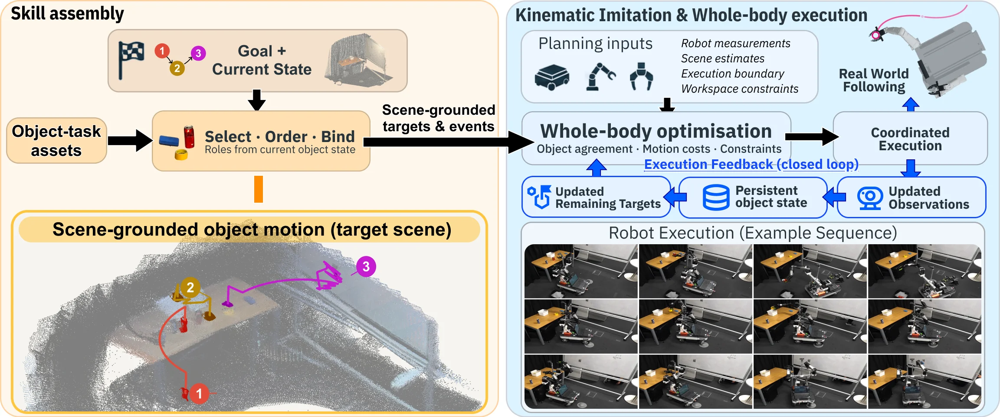

SAKISkill Assembly and Kinematic Imitation from Human Videos for Long-Horizon Mobile Manipulation
SAKI on the robot
Supplementary video, 2 min 59 s, narrated with English captions.
Method
Autonomous tasks
Robot footage is accelerated at the rate shown in each clip. First-person insets are approximately visually aligned. The collection sequence ends when the second can enters the basket.
Abstract
Learning from human videos offers a promising route to acquiring diverse manipulation skills. Extending this capability beyond tabletop settings to long-horizon mobile manipulation requires adapting and composing demonstrated interactions across changing scenes and robot configurations. We present Skill Assembly and Kinematic Imitation (SAKI), a framework connecting human-video skill acquisition, cross-demonstration assembly and closed-loop whole-body execution.
SAKI prepares reusable object-centric skills that preserve task-critical interactions while allowing transfer paths to adapt. Given a goal and supplied task dependencies, it selects and orders skills, binds their object roles to the current scene, and carries scene estimates and robot configuration between successive skills. Whole-body kinematic imitation generates coordinated base, arm and gripper motion. During execution, persistent object estimates maintain task references across viewpoint changes, while visual feedback updates remaining trajectories.
Real-robot experiments demonstrate skill reuse across layouts and the composition of independently demonstrated interactions into continuous mobile tasks, including tidying and wiping. Ablation results show that task-conditioned reference preparation substantially improves long-horizon task completion with whole-body optimisation and visual feedback held fixed.
Keep the interaction. Adapt the motion.
A human demonstrates an interaction once, in one scene. The robot must realise it with a different body, new object locations and changing viewpoints. SAKI separates what the interaction requires from the motion that carries it out.

-
Learn the interaction
Recover object motion from a single human video and prepare a reusable skill that keeps how the object is held, where contact persists and how the action ends.
-
Reuse it in a new scene
Bind object roles to current scene estimates. Whole-body kinematic imitation generates base, arm and gripper motion, and accepted visual updates revise the remaining targets.
-
Assemble a longer task
Select, order and bind independently prepared skills. Retained scene estimates and the preceding robot configuration initialise each next skill.
Prepared target paths are explanatory visualisations. Assembly footage and point clouds include separate recordings.
Cite SAKI
@misc{lu2026saki,
title = {{SAKI}: Skill Assembly and Kinematic Imitation from Human Videos
for Long-Horizon Mobile Manipulation},
author = {Lu, Yijie and Zhao, James and Zhi, Weiming},
year = {2026},
howpublished = {\url{https://aus.bot/research/saki/}}
}